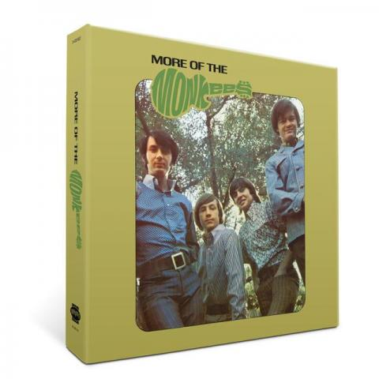

Announcing More Of The Monkees Super Deluxe Edition
Who's ready for even more of MORE? In honor of 50th anniversary this year, we've super-sized MORE OF THE MONKEES with a staggering 91 tracks including 55 previously-unreleased alternate takes, remixes, and newly discovered concert recordings from 1967, the band's earliest-known live tracks, as well as a bonus 7” of “I’m A Believer” (Remix)/”(I’m Not Your) Steppin’ Stone” (Vocals Only).
"This is the most exciting archival dig through The Monkees' vault since 2009's THE BIRDS, THE BEES AND THE MONKEES DELUXE EDITION. Every track is newly mastered for this set; the live material is the most historically significant of their career," says Andrew Sandoval, who produced the set and wrote a new essay for its expansive booklet.
MORE OF THE MONKEES: SUPER DELUXE EDITION significantly expands the special edition of MORE OF THE MONKEES released in 2006. Along with mono and stereo mixes of the original album, the SUPER DELUXE EDITION takes listeners into the studio for the making of the album through extensive studio outtakes. Many make their debut here, including the first recorded versions of: "Words," "Valleri," "Hold On Girl" and more. Backing tracks for early version of "Sometime In The Morning," "I'm A Believer" and "Look Out (Here Comes Tomorrow)" offer a behind-the-scenes perspective on the creative process.
However, the set's most historic aspect is the inclusion of newly discovered unreleased live music. Recorded in Arizona in 1967, these 10 tracks are The Monkees' earliest-known live recordings. The performance highlights songs from the band's 1966 self-titled debut ("I Wanna Be Free" and "Papa Gene's Blues"), along with covers of Ray Charles' "I Got A Woman" and Willie Dixon's "You Can't Judge A Book By The Cover."
Limited to just 4,500 numbered copies and housed in a hardbound 7"x7" box, the collection is available exclusively from monkees.com and rhino.com. MORE OF THE MONKEES: SUPER DELUXE EDITION will be available on , but you can pre-order now.
Get your copy of MORE OF THE MONKEES: SUPER DELUXE EDITION.
MORE OF THE MONKEES: SUPER DELUXE EDITION Track Listing
Disc One
- The Original Mono Album
- “She”
- “When Love Comes Knockin’ (At Your Door)”
- “Mary, Mary”
- “Hold On Girl”
- “Your Auntie Grizelda”
- “(I’m Not Your) Steppin’ Stone”
- “Look Out (Here Comes Tomorrow)”
- “The Kind Of Girl I Could Love”
- “The Day We Fall In Love”
- “Sometime In The Morning”
- “Laugh”
- “I’m A Believer”
- The Original Stereo Album
- “She”
- “When Love Comes Knockin’ (At Your Door)”
- “Mary, Mary”
- “Hold On Girl”
- “Your Auntie Grizelda”
- “(I’m Not Your) Steppin’ Stone”
- “Look Out (Here Comes Tomorrow)”
- “The Kind Of Girl I Could Love”
- “The Day We Fall In Love”
- “Sometime In The Morning”
- “Laugh”
- “I’m A Believer”
- Bonus Material
- “I’ll Be Back Up On My Feet” (First Recorded Version)
- “Of You” (Mono Mix)
- “I Don’t Think You Know Me” (Second Recorded Version – Mono Mix)
- “Words” (First Recorded Version – Mono Mix) *
- “Look Out (Here Comes Tomorrow)” (Mono TV Mix) *
- “Tear Drop City” (1966 Mono Mix)
- “Sometime In The Morning” (Alternate Mono Mix) *
- “Valleri” (First Recorded Version – Mono TV Mix)
Disc Two
- “Whatever’s Right” (Backing Track) *
- “Valleri” (First Recorded Version - Backing Track – Takes 1 & 2) *
- “(Theme From) The Monkees” (Second Version - Backing Track – Take 1) *
- “Words” (First Recorded Version – Mono TV Mix)
- “She” (Mono TV Mix) *
- “I Love You Really” (Version One) *
- “I Love You Really” (Version Three) *
- “I Love You Really” (Version Two) *
- “Ladies Aid Society” (Backing Track – Part One - Take 22) *
- “Ladies Aid Society” (Backing Track – Part Two – Take 1) *
- “Ladies Aid Society” (Original Mono Mix)
- “Kicking Stones” (Backing Track – Take 11) *
- “Kicking Stones” (Original Mono Mix) *
- “I Don’t Think You Know Me” (First Recorded Version – Mike’s Vocal – 20Stereo Remix) *
- “Mr. Webster” (First Recorded Version – 2017 Stereo Remix) *
- “Hold On Girl” (First Recorded Version – 2017 Stereo Remix) *
- “Through The Looking Glass” (First Recorded Version – 2017 Stereo Remix) *
- “Different Drum” (TV Version) *
- “Undecided” *
- “Sometime In The Morning” (Backing Track - Take 1) *
- “Sometime In The Morning” (2017 Stereo Remix) *
- “I Don’t Think You Know Me” (Second Recorded Version - Backing Track - Take *
- “I Don’t Think You Know Me” (Second Recorded Version - 2017 Stereo Remix) *
- “Your Auntie Grizelda” (Session Excerpt) *
- “Your Auntie Grizelda” (Mono TV Mix)
- “Hold On Girl” (Second Recorded Version - Alternate Backing Track) *
- “Hold On Girl” (Second Recorded Version - 2017 Stereo Remix) *
- “I’m A Believer” (Backing Track - Take 4) *
- “I’m A Believer” (Alternate Vocal Take – 2017 Stereo Remix) *
- “Look Out (Here Comes Tomorrow)” (Backing Track - Take 3) *
- “Look Out (Here Comes Tomorrow)” (Unedited Version - 2017 Stereo Remix) *
- “Mary, Mary” (Vocal Overdub Session) *
Disc Three
- “(I Prithee) Do Not Ask For Love” (First Recorded Version - 2017 Stereo Remix) *
- “Tear Drop City” (Original Speed – 2017 Stereo Remix) *
- “Looking For The Good Times” (Backing Track With Backing Vocals) *
- “I’ll Spend My Life With You” (First Recorded Version – 2017 Stereo Remix) *
- “Apples, Peaches, Bananas And Pears” (2017 Stereo Remix) *
- “Don’t Listen To Linda” (First Recorded Version – 2017 Stereo Remix) *
- “I Never Thought It Peculiar” (Mono TV Mix)
- “Laugh” (Mono TV Mix) *
- “The Day We Fall In Love” (2017 Stereo Remix) *
- “The Girl I Left Behind Me” (First Recorded Version - Backing Track)
- “Mary, Mary” (2017 Stereo Remix) *
- “Valleri” (First Recorded Version - 2017 Stereo Remix) *
- “Words” (First Recorded Version - 2017 Stereo Remix) *
- “Your Auntie Grizelda” (2017 Stereo Remix) *
- “Look Out (Here Comes Tomorrow)” (With Peter’s Narration - 2017 Stereo Remix) *
- “I Never Thought It Peculiar” (2017 Stereo Remix) *
- “Laugh” (2017 Stereo Remix) *
- “She’s So Far Out, She’s In” (Live In Arizona, 1967) *
- “You Just May Be The One” (Live In Arizona, 1967) *
- “I Wanna Be Free” (Live In Arizona, 1967) *
- “Sweet Young Thing” (Live In Arizona, 1967) *
- “Papa Gene’s Blues” (Live In Arizona, 1967) *
- “I Can’t Get Her Off Of My Mind” (Live In Arizona, 1967) *
- “Cripple Creek” (Live In Arizona, 1967) *
- “You Can’t Judge A Book By The Cover” (Live In Arizona, 1967) *
- “Gonna Build A Mountain” (Live In Arizona, 1967) *
- “I Got A Woman” (Live In Arizona, 1967) *
* previously unreleased